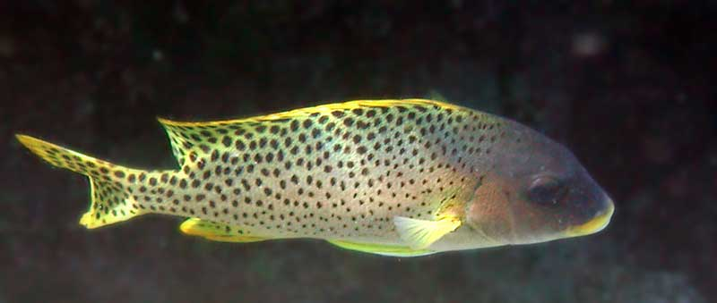

Чёрнокрапчатый ворчун
( Plectorhinchus gaterinus )
Другое название Чёрнопятнистый сладкогуб - это перевод английского названия Blackspotted sweetlips . Днём ворчуны небольшими группами прячутся в тени кораллов. Но этот ворчун выплыл на солнце для удобства фотографирования. Рыбу называют сладкогубом за широкие губы, и ворчуном за особый звук скрежетания. Я этого звука не слышал. Зато слышал звук раскусываемых кораллов, который могут создавать рыба попугай и аротрон.
